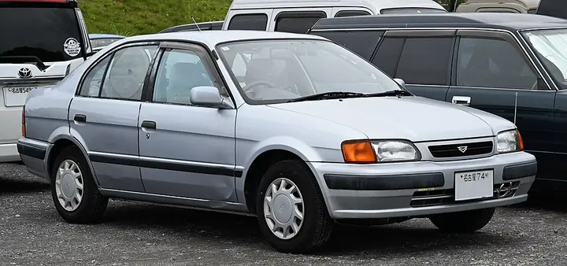
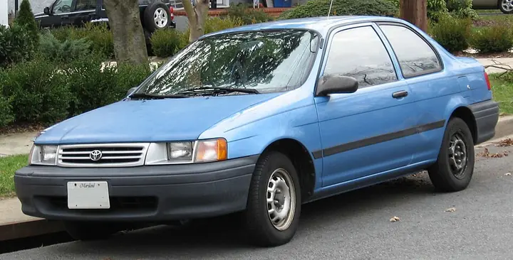
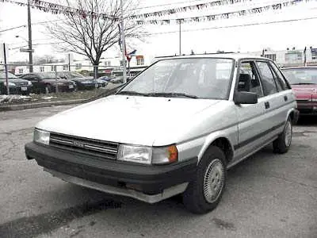
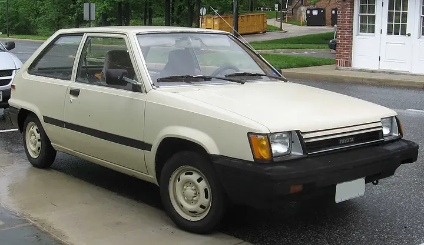
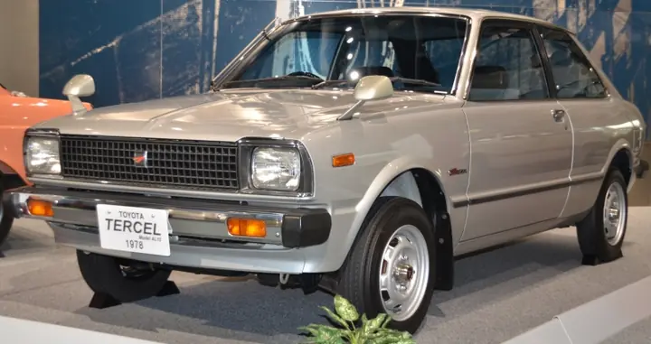

Toyota Tercel
Fifth generation (L50; 1994) · 1994–2003
Abstract
This generation of the Toyota Tercel was built September 1994 – July 1999 in Japan: Toyota, Aichi (Takaoka plant), Taiwan: Zhongli (until 2003), Thailand: Chachoengsao (TMT, Soluna) and other plants. Body styles: 2/4-door sedan, 3-door hatchback. Layout: Transverse front-engine, front-wheel-drive. Designed by Yasuhisa Hamano (1992), Shinichi Hiranaka (1992).


1Specifications
| Production | September 1994 – July 1999August 1996 – April 2003 (Thailand) |
|---|---|
| Assembly | Japan: Toyota, Aichi (Takaoka plant)Taiwan: Zhongli (until 2003)Thailand: Chachoengsao (TMT, Soluna)Indonesia: Karawang (TAM, Soluna) |
| Designer | Yasuhisa Hamano (1992)Shinichi Hiranaka (1992) |
| Body style | 2/4-door sedan3-door hatchback |
| Layout | Transverse front-engine, front-wheel-drive |
| Engine | 1.3 L 2E I4 (Central and South America)1.3 L 4E-FE I41.5 L 5E-FE I41.5 L 5A-FE I4 (Soluna)1.5 L 1N-T I4 (turbo-diesel) |
| Transmission | 4- or 5-speed manual3- or 4-speed automatic |
| Wheelbase | 93.7 in |
| Length | 154.13 in (hatchback)162.2 in (1995–97; sedan)162.7 in (1998–99; sedan)164.37 in (Soluna) |
| Width | 64.8 in (1998–99; sedan)65.35 in (hatchback)65.4 in (1995–97; sedan, Soluna) |
| Height | 53.2 in (sedan)53.93 in (hatchback)54.33 in (Soluna) |
| Also called | Toyota Corsa (Japan)Toyota Corolla II (hatchback, Japan)Toyota Soluna (sedan, South-East Asia) |
| Related | Toyota PaseoToyota Starlet |
| Successor | Toyota Vios (Southeast Asia)Toyota Platz (Japan)Toyota Duet (Corolla II, Japan) |
2Versions
- Facelift
- Toyota Soluna
- Dimension growth
3Previous generations








4Generation by generation
Length −1% from the first to the last
L10 19783,960 mm
L30 19863,910 mm
L40 19903,930 mm
L50 19943,915 mm